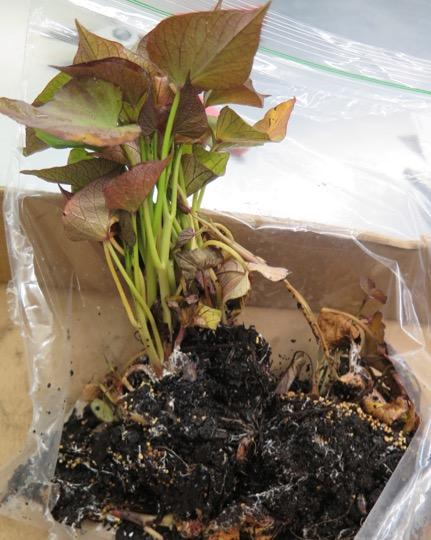
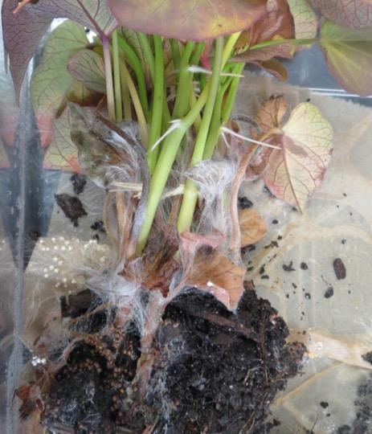
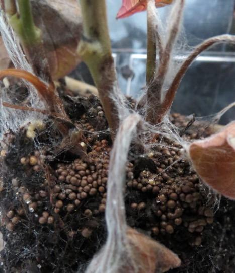
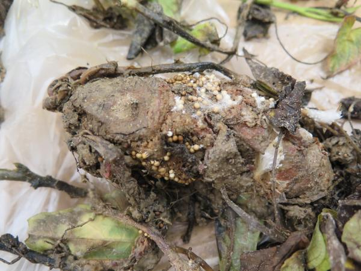

Pathogen
Southern blight is caused by the basidiomycete fungus Sclerotium rolfsii.
Host Crops and Plants
Sclerotium rolfsii has a very broad host range, affecting more than 500 plant species. This includes commercial plants such as potato, tomato, and peanut as well as many woody ornamentals and herbaceous annuals and perennials. For a complete list of hosts please visit the USDA Fungus-Host Distributions Database.
Identification
Southern blight, also known as sclerotial blight, southern stem rot, and bed rot is a foliar disease of sweetpotato, affecting plants in greenhouse and field beds. Symptoms are usually observed around isolated circular hot spots which can spread over time, and appear after sprouts have emerged from the soil.
Symptoms manifest with a soft rot affecting the seed root, followed by the sudden wilt (Figure 1) and subsequent death of a plant after sprouts have breached the soil line. In mild infections, symptoms may also be observed if plants are pulled from the bed, as infected slips will break off easily and have necrotic bases.
Shortly after symptom onset, thick, white mycelial mats will begin to grow on the soil surface and can even grow over the plant sprouts if the canopy is dense enough (Figure 2). Over time, sclerotia will form on the mycelial mat, usually in large numbers (Figure 3). The round sclerotia, which resemble mustard seeds, start as white to tan colored compact masses of hyphae, which gradually turn brown over time (Figure 4).

Figure 1. Wilting symptoms of sweetpotato plants caused by Sclerotium rolfsii. The plant on the left has only just begun to wilt while the plant on the right has fully collapsed.
Madison Stahr and Dr. Lina Quesada, NC State Vegetable Pathology Lab

Figure 2. The diagnostic thick, white mycelial mat growing over soil and plant tissue.
Madison Stahr and Dr. Lina Quesada, NC State Vegetable Pathology Lab

Figure 3. Numerous sclerotia formed on the soil around an infected plant. Sclerotia initially are white to light tan in color (left) and gradually turn a darker brown over time.
Madison Stahr and Dr. Lina Quesada, NC State Vegetable Pathology Lab

Figure 4. Tan sclerotia formed on surface of rotted seed root.
Dr. Lina Quesada, NC State Vegetable Pathology Lab
Favorable Environmental Conditions for the Disease
Optimal conditions for disease development are:
- Dense plant canopies
- Warm temperatures (82˚F and above)
- High humidity
Disease Transmission
Sclerotium rolfsii is a prominent soil microbe as it is able to infect many host plants, including monocots and dicots, and can survive in the soil without a host as sclerotia for many years. As such, S. rolfsii can move by mycelia growing across soil surfaces, by movement of infested soil, and by mechanical means.
General Disease Management
- Choose less susceptible cultivars, ex. Beauregard or Evangeline
- Use pathogen-free certified seed roots and cut slips 1 inch above the soil line. Do not pull plants
- Select bedding sites that have not been planted with sweetpotatoes for at least 3 years
- Deep plow fields. Sclerotia do not survive when buried 8 inches or deeper in soil
- Avoid plant injury, including removing bed covers (if used) in a timely manner to prevent heat injury
- Utilize soil solarization for a 6-week period at the hottest time of the year
Disease Control for Conventional Growers
The following are fungicides labeled for control of southern blight in seed beds. For the latest fungicide recommendations for southern blight of sweetpotato see the Southeastern US Vegetable Crop Handbook. Fungicide labels are legal documents, always read and follow fungicide labels.
|
Active Ingredient |
Example Product |
Fungicide Group |
Use |
|
dicloran |
Botran |
14 |
Pre-bedding seed dip and plant bed spray |
|
azoxystrobin |
Quadris |
11 |
In-furrow or banded applications after transplanting |
|
benzovinndiflupyr + difenoconazole |
Aprovia Top |
7 + 3 |
Ground or chemigation applications |
Useful Resources
- The NC State Plant Disease and Insect Clinic provides diagnostics and control recommendations
- The Extension Plant Pathology Portal provides information on crop disease management
- The Southeastern US Vegetable Crop Handbook provides information on vegetable disease management
- The USDA Fungus-Host Distributions Database provides information about reported hosts for fungal and oomycete pathogens
Publication date: Sept. 26, 2018
Reviewed/Revised: Jan. 9, 2023
Recommendations for the use of agricultural chemicals are included in this publication as a convenience to the reader. The use of brand names and any mention or listing of commercial products or services in this publication does not imply endorsement by NC State University or N.C. A&T State University nor discrimination against similar products or services not mentioned. Individuals who use agricultural chemicals are responsible for ensuring that the intended use complies with current regulations and conforms to the product label. Be sure to obtain current information about usage regulations and examine a current product label before applying any chemical. For assistance, contact your local N.C. Cooperative Extension county center.
N.C. Cooperative Extension prohibits discrimination and harassment regardless of age, color, disability, family and marital status, gender identity, national origin, political beliefs, race, religion, sex (including pregnancy), sexual orientation and veteran status.
![QR code linking to this publication page]()